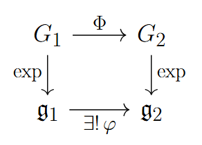

Chapter 6 Relationships Between Lie Groups and Lie Algebras
Theorem 6.1 Suppose \(G_1\) and \(G_2\) are matrix Lie groups with Lie algebras \(\mathfrak{g}_1\) and \(\mathfrak{g}_2\), respectively, and suppose \(\Phi : G_1 \to G_2\) is a Lie group homomorphism. Then there exists a unique linear map \(\varphi : \mathfrak{g}_1 \to \mathfrak{g}_2\) such that
\[ \Phi(e^{tX}) = e^{t\varphi(X)} \text{ for all $t \in \mathbb{R}$ and $X \in \mathfrak{g}_1$.}\]

This linear map has the following additional properties:
- \(\varphi([X,Y]) = [\varphi(X),\varphi(Y)]\) for all \(X,Y \in \mathfrak{g}_1\).
- \(\varphi(AXA^{-1}) = \Phi(A)\,\varphi(X)\,\Phi(A)^{-1}\) for all \(A \in G_1\) and \(X \in \mathfrak{g}_1\).
- \(\varphi(X)\) may be computed as
\[ \varphi(X) = \left.\frac{d}{dt}\,\Phi(e^{tX})\right|_{t=0}. \]